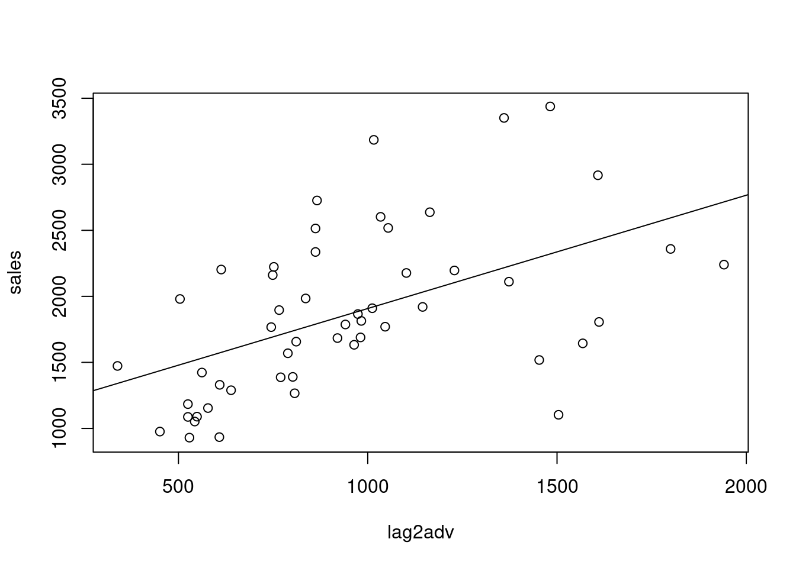

7 distributed lag models
Let y be a dependent variable and x an independent variable. The model
\[ y = \alpha +\sum_{k=0}^{\infty}\beta_kx_{t-k} +\epsilon_t \]
is called a distributed lag model. The effect of the IV on the DV is distributed over a number of lags (e.g., y is sales and x is advertising).
Weighted sum of the value of the X’s at time T and at previous times. Number of terms in the sum is infinite. Current and past advertising influences sales today. The x’s are being lagged. X_t - 1,2, etc. When k=0, then we have X_t.
A special case (geometric decay) is given by
\[ \beta_k = \beta\gamma^k \]
Some constnat Beta, and a gamma raised to the power k. If gamam is 1/2, then the weights are beta when k=0, then a half beta, quarter beta, 1/8 beta, etc. If the weights decrease in this geometric pattern, we call this geometric decay.
For this case the model becomes
\[ y_t = \alpha + \beta(x_t + \gamma*X_{t-1} \]
The backward shift operator B is defined by… \[ \]
If you operate with B3, you shift backwards 3 times… Let’s substitue the backwards shift operator into the expression. Then, for geometric decay, the model is …
\[ y_t = \alpha +\beta(1+\gamma\beta + \gamma^2\beta^2+...) \\ =\alpha+\beta(1-\gamma\beta)^{-1}x_t + \epsilon_t \]
by use of the geometric series summation. Now multiply on both sides by the oeprator 1-\(\gamma\beta\). This yields
\[ y_t = (1-\gamma)\alpha + \gamma{y_{t-1}} + \beta{x_t} + \epsilon_t - \gamma\epsilon_{t-1} \] or
\[ y_t = \alpha' + \gamma{y_{t-1}} + \beta{x_t} + \epsilon'_t \]
when geometric decay prevails to define the Beta_k’s. When the betas decrease in a geometric fashion, then you can re-write the model in this way. Second term is the auto-regressive term. Only have contemporaenous x. Also has an altered error structure. The original error structure is just epsilon_t.
The lag one value of the DV appears on the right hand side as an explanatory variables, and the x variable appears only contemperaneously. The structure is first order auto-regressive structure. It is an arx model. Autoregressive becayse y is regressed back on itself, and the x denote the fact that there is an explanatory x variable. The epsilon is different from the original epsilon.
When geometric decay prevails, there is this simpler way to write the model.
Notes: the x’s have different lags. There is a lot of correlation. High degree of collinearity makes it difficult to interpret the beta coefficient. Consider a simpler formulation if geometric decay prevails.
Analysis: how to modify the data so that we can get reduction to white noise when we fit a model.
lydia <- read.csv("/cloud/project/data/Lydia.txt")
attach(lydia)
head(lydia)## year sales advrtsng advcopy Ind1 Ind2 Ind3 lagsales lag2sales lagadv
## 1 1907 1016 608 1 1 0 0 NA NA NA
## 2 1908 921 451 1 1 0 0 1016 NA 608
## 3 1909 934 529 1 1 0 0 921 1016 451
## 4 1910 976 543 1 1 0 0 934 921 529
## 5 1911 930 525 1 1 0 0 976 934 543
## 6 1912 1052 549 1 1 0 0 930 976 525sales<- lydia$sales
ad<- lydia$advrtsng
plot(ts(sales,start=1907),ylim=c(0,4000),
xlab="year",main="Sales and
Advertising vs. Year",lty=1,lwd=2,col="red")
lines(ts(ad,start=c(1907,1)),lty=2,lwd=2,col="blue")
Sales and advertising series have similar traces. Advertising series appears to lag the sales series by perhaps a year in its pattern.
The model below is simply \[sales_t = \alpha +\beta_1{advrtsng} +\epsilon_t\]. Contemporaneous advertising is highly significant.
model1<-lm(sales~advrtsng);summary(model1)##
## Call:
## lm(formula = sales ~ advrtsng)
##
## Residuals:
## Min 1Q Median 3Q Max
## -876.45 -222.95 -12.24 221.09 611.77
##
## Coefficients:
## Estimate Std. Error t value Pr(>|t|)
## (Intercept) 488.8327 127.4390 3.836 0.00034 ***
## advrtsng 1.4346 0.1269 11.308 1.26e-15 ***
## ---
## Signif. codes: 0 '***' 0.001 '**' 0.01 '*' 0.05 '.' 0.1 ' ' 1
##
## Residual standard error: 343.5 on 52 degrees of freedom
## Multiple R-squared: 0.7109, Adjusted R-squared: 0.7053
## F-statistic: 127.9 on 1 and 52 DF, p-value: 1.259e-15Residual plot
plot(ts(resid(model1),start=1907),xlab="year",ylab="residual",main="mo
del 1 residuals vs. year")
Adding a factor variable for advcopy.
fadvcopy<-as.factor(advcopy)
model2<-lm(sales~advrtsng+fadvcopy);summary(model2)##
## Call:
## lm(formula = sales ~ advrtsng + fadvcopy)
##
## Residuals:
## Min 1Q Median 3Q Max
## -606.08 -115.16 10.76 177.56 389.25
##
## Coefficients:
## Estimate Std. Error t value Pr(>|t|)
## (Intercept) 271.8320 107.9132 2.519 0.015082 *
## advrtsng 1.3759 0.1098 12.533 < 2e-16 ***
## fadvcopy2 583.3284 130.9357 4.455 4.87e-05 ***
## fadvcopy3 16.8703 128.6327 0.131 0.896193
## fadvcopy4 400.5189 113.7859 3.520 0.000943 ***
## ---
## Signif. codes: 0 '***' 0.001 '**' 0.01 '*' 0.05 '.' 0.1 ' ' 1
##
## Residual standard error: 255.3 on 49 degrees of freedom
## Multiple R-squared: 0.8494, Adjusted R-squared: 0.8371
## F-statistic: 69.11 on 4 and 49 DF, p-value: < 2.2e-16Same fit as before, just using dummy variables
model3<-lm(sales~advrtsng+Ind1+Ind2+Ind3);summary(model3)##
## Call:
## lm(formula = sales ~ advrtsng + Ind1 + Ind2 + Ind3)
##
## Residuals:
## Min 1Q Median 3Q Max
## -606.08 -115.16 10.76 177.56 389.25
##
## Coefficients:
## Estimate Std. Error t value Pr(>|t|)
## (Intercept) 672.3509 113.6994 5.913 3.18e-07 ***
## advrtsng 1.3759 0.1098 12.533 < 2e-16 ***
## Ind1 -400.5189 113.7859 -3.520 0.000943 ***
## Ind2 182.8095 97.2061 1.881 0.065971 .
## Ind3 -383.6485 90.5743 -4.236 1.00e-04 ***
## ---
## Signif. codes: 0 '***' 0.001 '**' 0.01 '*' 0.05 '.' 0.1 ' ' 1
##
## Residual standard error: 255.3 on 49 degrees of freedom
## Multiple R-squared: 0.8494, Adjusted R-squared: 0.8371
## F-statistic: 69.11 on 4 and 49 DF, p-value: < 2.2e-16Goal is to reduce to white noise so that we explain as much autocorrelation as possible.
To what extend do sales depend on advertising from last year? Lag advertising by 2,3,4,5 years. Sales vs. advertising for 1 year is sig, 2 years is sig, 3, sig, 4 not sig. So, start with geometric decay model, and then add to the regression, advertising that is only contemporaenous. If geometric doesn’t work, add advertising only by 1 year, or by 2 years.
lag2adv<-c(NA,NA,head(advrtsng,-2))
lag3adv<-c(NA,NA,NA,head(advrtsng,-3))
lag4adv<-c(NA,NA,NA,NA,head(advrtsng,-4))
lag5adv<-c(NA,NA,NA,NA,NA,head(advrtsng,-5))
plot(lagadv,sales)
abline(lm(sales~lagadv))
plot(lag2adv,sales)
abline(lm(sales~lag2adv))
plot(lag3adv,sales)
abline(lm(sales~lag3adv))
plot(lag4adv,sales)
abline(lm(sales~lag4adv))
Fit a distributed lag model with geometric decay
\[ S_t = \alpha + \beta(A_t + \gamma{A_{t-1}} + \gamma^2{A_{t-2}} + \gamma^3{A_{t-3}}) + \epsilon_t \\ = \alpha +\beta(1-\gamma{\beta})^{-1}A_{t} + \epsilon_t \]
where B is the backward shift operator. Recall that this formulation is equivalent to the autoregressive representation
\[ S_t = (1-\gamma)\alpha+\gamma{S_{t-1}} + \beta{A_t} + \epsilon_t - \gamma{\epsilon}_{t-1} \] In model above, sales is regressed on sales 1 last year, plus contemporaenous advertising, plus the error term, and the different dummies for time regimes. Effect of advertising is the Beta coefficient. Want to measure the impact of advertising today and in the past on current sales. The effect of advertising in the same year, contemporaneously, is Beta. The effect of advertising on sales this year from the precious year is BetaXGamma. Effect of advertising from two years ago is Beta*Gamm squared. Effect of three years ago is BetaXGamma Q.
In this model the contemporaenous effect of advertising is \(\Beta\), the cumulative effect after one more time period is \(\beta(1+\gamma)\), and the cumulatibe effect after m-1 more time periods is
\[ \beta(1+\lambda + \lambda^2+...+\lambda^{m-1}) = \beta(1-\lambda^{m})/(1-\lambda) \]
As m increases, this converged to \(\beta/(1-\lambda)\). Thus, the proportion fo the long-run cumulative effect of advertising upon sales realized after m time periods is \(1-\lambda^m\). Given p, the solution for m is
\[ m = log_e(1-p)/log_ey \]
Model above is a way to measure long run effect of advertising when geometric decay prevails. From here, we can ask “how many time periods does it take to achieve 90% of this long term impact?” How far back in the past do we have to go to capture 90% of that impact? p = .9, if it is 90%.
The model below is
\[ S_t = \alpha+\beta_1{A_t} + \beta_2{S_{t-1}} + \beta_3{Ind1_t} + \beta_4{Ind2_t} + \beta_5{Ind3_t} + \epsilon_t \]
So, fit a model with geometric decay. The error term is just epsilon. Put in dummy variables for the time regine. Sales regressed on advertising, and sales for the previous years.
lagsales<-c(NA,head(sales,-1))
lag2sales<-c(NA,NA,head(sales,-2))
model4<-lm(sales~lagsales+advrtsng+Ind1+Ind2+Ind3);summary(model4)##
## Call:
## lm(formula = sales ~ lagsales + advrtsng + Ind1 + Ind2 + Ind3)
##
## Residuals:
## Min 1Q Median 3Q Max
## -371.39 -103.57 -30.79 88.24 389.88
##
## Coefficients:
## Estimate Std. Error t value Pr(>|t|)
## (Intercept) 254.63920 96.30805 2.644 0.011101 *
## lagsales 0.60734 0.08142 7.459 1.65e-09 ***
## advrtsng 0.53450 0.13604 3.929 0.000278 ***
## Ind1 -133.34673 88.95563 -1.499 0.140555
## Ind2 216.83964 67.21894 3.226 0.002288 **
## Ind3 -202.50459 67.05600 -3.020 0.004079 **
## ---
## Signif. codes: 0 '***' 0.001 '**' 0.01 '*' 0.05 '.' 0.1 ' ' 1
##
## Residual standard error: 176.2 on 47 degrees of freedom
## (1 observation deleted due to missingness)
## Multiple R-squared: 0.929, Adjusted R-squared: 0.9215
## F-statistic: 123 on 5 and 47 DF, p-value: < 2.2e-16Add lag two of sales as an explanatory variable
model5<-
lm(sales~lagsales+lag2sales+advrtsng+Ind1+Ind2+Ind3);summary(model5)##
## Call:
## lm(formula = sales ~ lagsales + lag2sales + advrtsng + Ind1 +
## Ind2 + Ind3)
##
## Residuals:
## Min 1Q Median 3Q Max
## -314.75 -97.10 -19.04 88.51 363.02
##
## Coefficients:
## Estimate Std. Error t value Pr(>|t|)
## (Intercept) 282.3863 95.4090 2.960 0.0049 **
## lagsales 0.8561 0.1489 5.748 7.38e-07 ***
## lag2sales -0.2372 0.1207 -1.965 0.0556 .
## advrtsng 0.4791 0.1362 3.519 0.0010 **
## Ind1 -139.5593 91.8130 -1.520 0.1355
## Ind2 176.1334 69.0602 2.550 0.0142 *
## Ind3 -160.2427 69.0219 -2.322 0.0248 *
## ---
## Signif. codes: 0 '***' 0.001 '**' 0.01 '*' 0.05 '.' 0.1 ' ' 1
##
## Residual standard error: 172.5 on 45 degrees of freedom
## (2 observations deleted due to missingness)
## Multiple R-squared: 0.9319, Adjusted R-squared: 0.9228
## F-statistic: 102.7 on 6 and 45 DF, p-value: < 2.2e-16Fit another model. Add lag one advertising to the precious fit
options(digits=9)
model6<-
lm(sales~lagsales+lag2sales+advrtsng+lagadv+Ind1+Ind2+Ind3);summary(model6)##
## Call:
## lm(formula = sales ~ lagsales + lag2sales + advrtsng + lagadv +
## Ind1 + Ind2 + Ind3)
##
## Residuals:
## Min 1Q Median 3Q Max
## -333.5635 -98.4101 -12.3733 85.5482 436.3308
##
## Coefficients:
## Estimate Std. Error t value Pr(>|t|)
## (Intercept) 259.860376 91.770977 2.83162 0.00695867 **
## lagsales 0.965412 0.150265 6.42475 8.0049e-08 ***
## lag2sales -0.205023 0.116299 -1.76289 0.08486339 .
## advrtsng 0.549964 0.133858 4.10856 0.00017055 ***
## lagadv -0.344700 0.151048 -2.28206 0.02737726 *
## Ind1 -116.556442 88.376485 -1.31886 0.19403832
## Ind2 158.493912 66.492314 2.38364 0.02152282 *
## Ind3 -88.371460 73.133545 -1.20836 0.23336410
## ---
## Signif. codes: 0 '***' 0.001 '**' 0.01 '*' 0.05 '.' 0.1 ' ' 1
##
## Residual standard error: 164.995 on 44 degrees of freedom
## (2 observations deleted due to missingness)
## Multiple R-squared: 0.939119, Adjusted R-squared: 0.929433
## F-statistic: 96.9603 on 7 and 44 DF, p-value: < 2.22e-16plot(ts(resid(model6),start=c(1907,1)),xlab="year",ylab="residual",main="model 6 residuals vs. year")
Calculate the 90% duration interval. Determine the first two deltas by hand calculation
deltapartial<-delta<-c(rep(0,times=500))
#deltapartial is the partial sum of the deltas
delta[1]<-0.549964;delta[2]<-0.186242
deltapartial[1]<-delta[1]
deltapartial[2]<-deltapartial[1]+delta[2]
for(j in 3:500){
j1<-j-1;j2<-j-2
delta[j]<-0.965412*delta[j1]-0.205023*delta[j2]
deltapartial[j]<-deltapartial[j1]+delta[j]
}
deltapartial[500]*0.9## [1] 0.770990227deltapartial[1:20]## [1] 0.549964000 0.736206000 0.803250993 0.829793139 0.841671481 0.847697224
## [7] 0.851079215 0.853108814 0.854374827 0.855180937 0.855699604 0.856035059
## [13] 0.856252574 0.856393788 0.856485524 0.856545133 0.856583874 0.856609053
## [19] 0.856625418 0.856636055